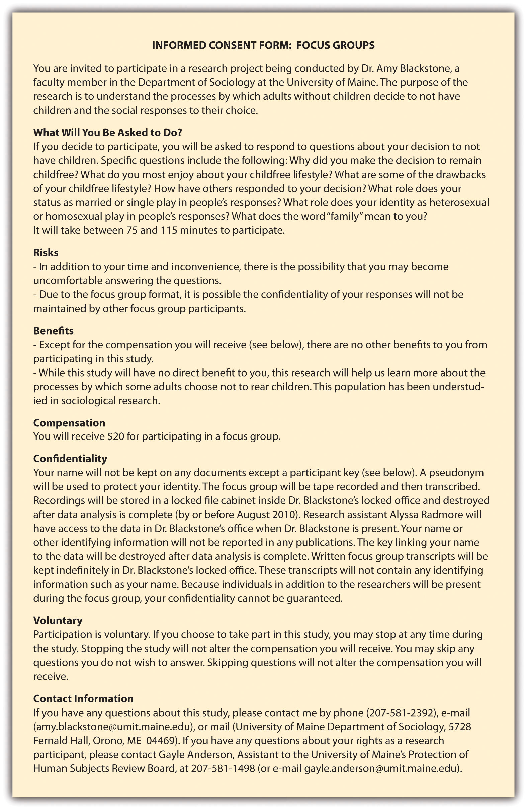

As should be clear by now, conducting research on humans presents a number of unique ethical considerations. Human research subjects must be given the opportunity to consent to their participation in research. Further, subjects’ identities and the information they share should be protected by researchers. Of course, how consent and identity protection are defined may vary by individual researcher, institution, or academic discipline. In Section 3.1 "Research on Humans", we examined the role that institutions play in shaping research ethics. In this section, we’ll take a look at a few specific topics that individual researchers and sociologists in general must consider before embarking on research with human subjects.
A norm of voluntary participation is presumed in all sociological research projects. In other words, we cannot force anyone to participate in our research without that person’s knowledge or consent (so much for that Truman Show experiment). Researchers must therefore design procedures to obtain subjects’ informed consentA subject’s voluntary agreement to participate in research based on a full understanding of the research and of the possible risks and benefits involved. to participate in their research. Informed consent is defined as a subject’s voluntary agreement to participate in research based on a full understanding of the research and of the possible risks and benefits involved. Although it sounds simple, ensuring that one has actually obtained informed consent is a much more complex process than you might initially presume.
The first requirement is that, in giving their informed consent, subjects may neither waive nor even appear to waive any of their legal rights. Subjects also cannot release a researcher, his or her sponsor, or institution from any legal liability should something go wrong during the course of their participation in the research (US Department of Health and Human Services, 2009).US Department of Health and Human Services. (2009). Code of federal regulations (45 CFR 46). The full set of requirements for informed consent can be read at http://www.hhs.gov/ohrp/humansubjects/guidance/45cfr46.html#46.116. Because sociological research does not typically involve asking subjects to place themselves at risk of physical harm by, for example, taking untested drugs or consenting to new medical procedures, sociological researchers do not often worry about potential liability associated with their research projects. However, their research may involve other types of risks. For example, what if a sociological researcher fails to sufficiently conceal the identity of a subject who admits to participating in a local swinger’s club, enjoying a little sadomasochistic activity now and again or violating her marriage vows? While the law may not have been broken in any of these cases, the subject’s social standing, marriage, custody rights, or employment could be jeopardized were any of these tidbits to become public. This example might seem rather extreme, but the point remains: even sociologists conduct research that could come with some very real legal ramifications.
Beyond the legal issues, most institutional review boards (IRBs) require researchers to share some details about the purpose of the research, possible benefits of participation, and, most importantly, possible risks associated with participating in that research with their subjects. In addition, researchers must describe how they will protect subjects’ identities, how and for how long any data collected will be stored, and whom to contact for additional information about the study or about subjects’ rights. All this information is typically shared in an informed consent form that researchers provide to subjects. In some cases, subjects are asked to sign the consent form indicating that they have read it and fully understand its contents. In other cases, subjects are simply provided a copy of the consent form and researchers are responsible for making sure that subjects have read and understand the form before proceeding with any kind of data collection. Figure 3.6 "Sample Informed Consent Form" contains a sample informed consent form taken from a research project on child-free adults. Note that this consent form describes a risk that may be unique to the particular method of data collection being employed: focus groups.
Figure 3.6 Sample Informed Consent Form
One last point to consider when preparing to obtain informed consent is that not all potential research subjects are considered equally competent or legally allowed to consent to participate in research. These subjects are sometimes referred to as members of vulnerable populationsSubjects who may be at risk of experiencing undue influence or coercion. This typically includes minors, prisoners, parolees, patients, mentally or physically disabled individuals, fetuses and pregnant women, and economically or educationally disadvantaged individuals., people who may be at risk of experiencing undue influence or coercion.The US Department of Health and Human Services’ guidelines on vulnerable populations can be read at http://www.hhs.gov/ohrp/policy/populations.
The rules for consent are more stringent for vulnerable populations. For example, minors must have the consent of a legal guardian in order to participate in research. In some cases, the minors themselves are also asked to participate in the consent process by signing special, age-appropriate consent forms designed specifically for them. Prisoners and parolees also qualify as vulnerable populations. Concern about the vulnerability of these subjects comes from the very real possibility that prisoners and parolees could perceive that they will receive some highly desired reward, such as early release, if they participate in research. Another potential concern regarding vulnerable populations is that they may be underrepresented in research, and even denied potential benefits of participation in research, specifically because of concerns about their ability to consent. So on the one hand, researchers must take extra care to ensure that their procedures for obtaining consent from vulnerable populations are not coercive. And the procedures for receiving approval to conduct research on these groups may be more rigorous than that for nonvulnerable populations. On the other hand, researchers must work to avoid excluding members of vulnerable populations from participation simply on the grounds that they are vulnerable or that obtaining their consent may be more complex. While there is no easy solution to this double-edged sword, an awareness of the potential concerns associated with research on vulnerable populations is important for identifying whatever solution is most appropriate for a specific case.
As mentioned earlier, the informed consent process includes the requirement that researchers outline how they will protect the identities of subjects. This aspect of the process, however, is one of the most commonly misunderstood aspects of research.
In protecting subjects’ identities, researchers typically promise to maintain either the anonymityOccurs when no identifying information is collected or maintained on research subjects, and no one, including the researcher, can connect individual participants with their data such as interview quotes or survey responses. or the confidentialityOccurs when some identifying information on research subjects is kept, but only the researcher can link participants with their data, and he or she promises not to do so publicly. of their research subjects. Anonymity is the more stringent of the two. When a researcher promises anonymity to participants, not even the researcher is able to link participants’ data with their identities. Anonymity may be impossible for some sociological researchers to promise because several of the modes of data collection that sociologists employ, such as participant observation and face-to-face interviewing, require that researchers know the identities of their research participants. In these cases, a researcher should be able to at least promise confidentiality to participants. Offering confidentiality means that some identifying information on one’s subjects is known and may be kept, but only the researcher can link participants with their data and he or she promises not to do so publicly. As you can see under the “Risks” section of the consent form in Figure 3.6 "Sample Informed Consent Form", sometimes it is not even possible to promise that a subject’s confidentiality will be maintained. This is the case if data are collected in public or in the presence of other research participants in the course of a group interview, for example.
Protecting research participants’ identities is not always a simple prospect, especially for those conducting research on stigmatized groups or illegal behaviors. Sociologist Scott DeMuth learned that all too well when conducting his dissertation research on a group of animal rights activists. As a participant observer, DeMuth knew the identities of his research subjects. So when some of his research subjects vandalized facilities and removed animals from several research labs at the University of Iowa, a grand jury called on Mr. DeMuth to reveal the identities of the participants in the raid. When DeMuth refused to do so, he was jailed briefly and then charged with conspiracy to commit animal enterprise terrorism and cause damage to the animal enterprise (Jaschik, 2009).Jaschik, S. (2009, December 4). Protecting his sources. Inside Higher Ed. Retrieved from http://www.insidehighered.com/news/2009/12/04/demuth
Publicly, DeMuth’s case raised many of the same questions as Laud Humphreys’ work 40 years earlier. What do social scientists owe the public? Is DeMuth, by protecting his research subjects, harming those whose labs were vandalized? Is he harming the taxpayers who funded those labs? Or is it more important that DeMuth emphasize what he owes his research subjects, who were told their identities would be protected? DeMuth’s case also sparked controversy among academics, some of whom thought that as an academic himself, DeMuth should have been more sympathetic to the plight of the faculty and students who lost years of research as a result of the attack on their labs. Many others stood by DeMuth, arguing that the personal and academic freedom of scholars must be protected whether we support their research topics and subjects or not. DeMuth’s academic adviser even created a new group, Scholars for Academic Justice (http://sajumn.wordpress.com), to support DeMuth and other academics who face persecution or prosecution as a result of the research they conduct. What do you think? Should DeMuth have revealed the identities of his research subjects? Why or why not?
Often times specific disciplines will provide their own set of guidelines for protecting research subjects and, more generally, for conducting ethical research. For sociologists, the American Sociological Association (ASA) has adopted a set of ethical principles intended to guide researchers in the discipline (2008).American Sociological Association. (2008). Code of ethics and policies and procedures of the ASA committee on professional ethics. Washington, DC: ASA. The ASA Code features the following five general principles:
The principle of professional competence states that researchers should recognize their own limitations and only conduct research for which they have been properly trained. It also states that researchers should engage in ongoing education for themselves in order to remain competent. The principle of integrity directs that sociologists be “honest, fair, and respectful” in all their professional activities including, but not limited to, their research activities. The third principle, professional and scientific responsibility, guides sociologists to be respectful in their relationships with one another at the same time that it warns against collegiality if it impedes one’s ability to behave ethically. This principle balances scientific collegiality with public trust in sociology. The fourth principle, respect for people’s rights, dignity, and diversity, addresses the need to reduce bias in all professional activities. Finally, social responsibility, the fifth principle, states that sociologists should “strive to advance the science of sociology and serve the public good.”
On their faces, these five principles seem straightforward and relatively easy to abide by. Of course, each of these principles, along with the 20, more specific ethical standards that follow in the ASA Code, must be interpreted by individual researchers. Consider, for example, how those who support Scott DeMuth’s decision to remain silent about his research subjects’ identities might differ in their understanding of the principles from those who feel that DeMuth should testify and break his promise of confidentiality to subjects.